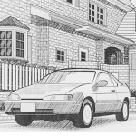
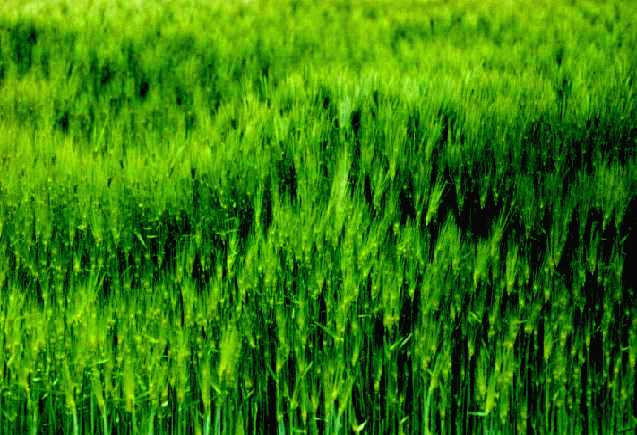
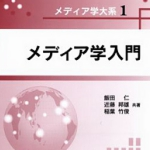
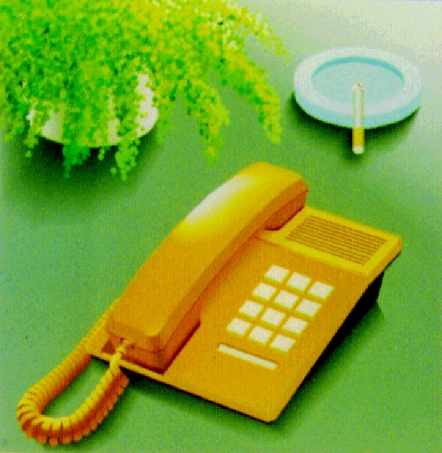
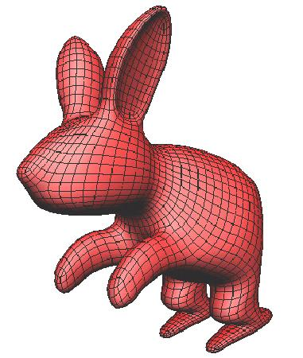
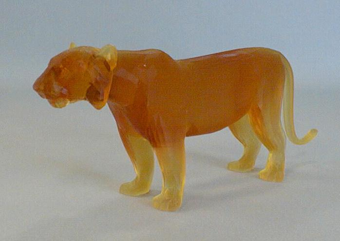
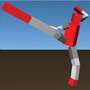

Media Studies Frontier Symposium Materials
Materials related to the Media Studies Frontier Symposium.
Computer Graphics / Content Creation / AI-Assisted Education
This page provides links to research achievements, journal papers, international conference papers, books, domestic conference papers, articles, awards, invited talks, and doctoral theses related to computer graphics, digital content creation, visual computing, design support, animation, games, and education.
PDF files and related materials will be added step by step. Older papers
that are not available through academic society websites can be organized
in the files/papers folder and linked from each publication list.
Materials related to the Media Studies Frontier Symposium.

A book or compiled material summarizing research achievements.

Journal papers published in academic journals and related publications.
Papers presented at international conferences and symposia.

Books and edited volumes related to computer graphics, content creation, media studies, and education.

Papers presented at domestic conferences, workshops, and research meetings.

Articles, commentaries, reports, and related writings.

Awards, honors, and recognitions related to research, education, academic activities, and digital art and design.

Invited talks, keynote lectures, special lectures, and related presentations.

Doctoral theses supervised or related to major research topics.